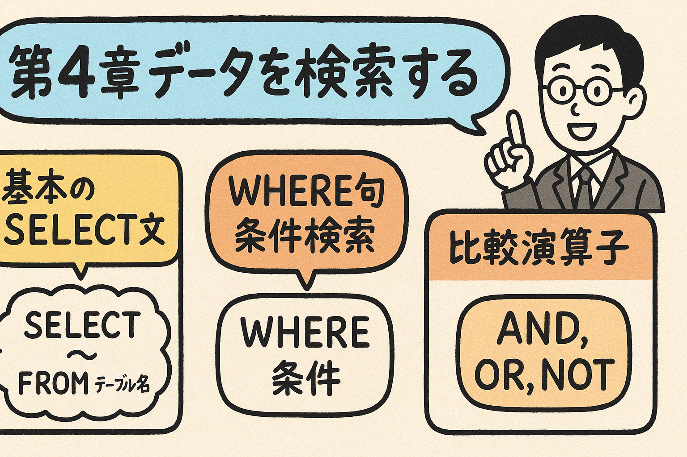

この第4章では、SQLの基本となる「データの検索」を学習します。データベースからデータを取得するための基本的なSELECT文から、WHERE句を使った条件検索、比較演算子や論理演算子を使った複雑な検索条件の作成まで、実践的な例を通して学びます。
SQLの最も基本的で重要な機能は、データベースからデータを検索することです。この章では、PostgreSQLを使用してデータベースからデータを取得するためのさまざまな方法を学びます。
SELECT文は、データベースからデータを取得するための基本的なSQL文です。最もシンプルなSELECT文の構文は次のとおりです：
SELECT 列名1, 列名2, ... FROM テーブル名;
全ての列を取得したい場合は、アスタリスク（*）を使用できます：
SELECT * FROM テーブル名;
以下の「customers」テーブルを例に説明します。このテーブルには顧客情報が保存されています。
| customer_id | first_name | last_name | age | city | |
|---|---|---|---|---|---|
| 1 | 田中 | 太郎 | tanaka@example.com | 28 | 東京 |
| 2 | 佐藤 | 花子 | sato@example.com | 22 | 大阪 |
| 3 | 鈴木 | 一郎 | suzuki@example.com | 35 | 名古屋 |
| 4 | 高橋 | 恵子 | takahashi@example.com | 19 | 福岡 |
| 5 | 伊藤 | 健太 | ito@example.com | 31 | 札幌 |
すべての顧客情報を取得する：
SELECT * FROM customers;
特定の列だけを取得する：
SELECT first_name, last_name, city FROM customers;
結果：
| first_name | last_name | city |
|---|---|---|
| 田中 | 太郎 | 東京 |
| 佐藤 | 花子 | 大阪 |
| 鈴木 | 一郎 | 名古屋 |
| 高橋 | 恵子 | 福岡 |
| 伊藤 | 健太 | 札幌 |
SELECT文では、列に別名（エイリアス）をつけることができます。
SELECT first_name AS 名, last_name AS 姓, city AS 都市 FROM customers;
結果：
| 名 | 姓 | 都市 |
|---|---|---|
| 田中 | 太郎 | 東京 |
| 佐藤 | 花子 | 大阪 |
DISTINCTキーワードを使用すると、重複のない結果を取得できます。
SELECT DISTINCT city FROM customers;
結果：
| city |
|---|
| 東京 |
| 大阪 |
| 名古屋 |
| 福岡 |
| 札幌 |
PostgreSQLでは、テーブル名や列名が予約語と衝突する場合や、大文字・小文字を区別したい場合、ダブルクォーテーション（"）で囲みます。一方、文字列リテラルはシングルクォーテーション（'）で囲みます。
例：
SELECT "First_Name", "Last_Name" FROM "Customers";
通常は小文字でテーブル名や列名を定義することが推奨されており、その場合は引用符なしで使用できます。
以下のテーブル「products」があります：
| product_id | product_name | category | price | stock |
|---|---|---|---|---|
| 1 | ノートパソコン | 電子機器 | 85000 | 10 |
| 2 | スマートフォン | 電子機器 | 55000 | 15 |
| 3 | コーヒーメーカー | 家電 | 12000 | 8 |
| 4 | スニーカー | 衣料品 | 9500 | 20 |
| 5 | ヘッドフォン | 電子機器 | 18000 | 12 |
次のSQL文を書いてみましょう：
WHERE句を使用すると、特定の条件に一致する行だけを取得できます。基本的な構文は次のとおりです：
SELECT 列名1, 列名2, ... FROM テーブル名 WHERE 条件;
例えば、customers テーブルから東京に住んでいる顧客のみを取得したい場合：
SELECT * FROM customers WHERE city = '東京';
結果：
| customer_id | first_name | last_name | age | city | |
|---|---|---|---|---|---|
| 1 | 田中 | 太郎 | tanaka@example.com | 28 | 東京 |
年齢が30歳以上の顧客を検索する例：
SELECT first_name, last_name, age FROM customers WHERE age >= 30;
結果：
| first_name | last_name | age |
|---|---|---|
| 鈴木 | 一郎 | 35 |
| 伊藤 | 健太 | 31 |
LIKE演算子を使用すると、文字列パターンでデータを検索できます。ワイルドカード文字として「%」（任意の文字列）と「_」（任意の1文字）が使用できます。
-- メールアドレスが「t」で始まる顧客を検索
SELECT * FROM customers WHERE email LIKE 't%';
結果：
| customer_id | first_name | last_name | age | city | |
|---|---|---|---|---|---|
| 1 | 田中 | 太郎 | tanaka@example.com | 28 | 東京 |
| 4 | 高橋 | 恵子 | takahashi@example.com | 19 | 福岡 |
BETWEEN演算子を使用すると、指定された範囲内の値を持つ行を抽出できます。
-- 年齢が20〜30歳の顧客を検索
SELECT * FROM customers WHERE age BETWEEN 20 AND 30;
結果：
| customer_id | first_name | last_name | age | city | |
|---|---|---|---|---|---|
| 1 | 田中 | 太郎 | tanaka@example.com | 28 | 東京 |
| 2 | 佐藤 | 花子 | sato@example.com | 22 | 大阪 |
NULL値は「値が不明」または「値が存在しない」ことを表します。NULL値を検索するには、特別な構文が必要です。
-- メールアドレスがNULLの顧客を検索
SELECT * FROM customers WHERE email IS NULL;
-- メールアドレスがNULLでない顧客を検索
SELECT * FROM customers WHERE email IS NOT NULL;
NULLと空文字列('')は異なります。NULLは「値がない」ことを表し、空文字列は長さがゼロの文字列を表します。例えば：
-- これらは異なる条件です
SELECT * FROM customers WHERE email IS NULL; -- メールアドレスが存在しない
SELECT * FROM customers WHERE email = ''; -- メールアドレスが空文字列
前述のproductsテーブルを使って、以下のSQL文を書いてみましょう：
WHERE句で使用できる主な比較演算子は以下のとおりです：
左辺と右辺が等しい場合に真となります。
例: WHERE city = '東京'
左辺と右辺が等しくない場合に真となります。
例: WHERE city <> '東京'
左辺が右辺より小さい場合に真となります。
例: WHERE age < 20
左辺が右辺より大きい場合に真となります。
例: WHERE age > 30
左辺が右辺以下の場合に真となります。
例: WHERE price <= 1000
左辺が右辺以上の場合に真となります。
例: WHERE price >= 1000
customersテーブルから年齢が25歳より大きい顧客を検索します：
SELECT * FROM customers WHERE age > 25;
結果：
| customer_id | first_name | last_name | age | city | |
|---|---|---|---|---|---|
| 1 | 田中 | 太郎 | tanaka@example.com | 28 | 東京 |
| 3 | 鈴木 | 一郎 | suzuki@example.com | 35 | 名古屋 |
| 5 | 伊藤 | 健太 | ito@example.com | 31 | 札幌 |
以下の特別な比較演算子もSQLでは頻繁に使用されます：
文字列パターンのマッチングに使用します。
例: WHERE name LIKE 'A%'
指定範囲内の値を検索します。
例: WHERE age BETWEEN 20 AND 30
値のリストのいずれかに一致する場合に真となります。
例: WHERE city IN ('東京', '大阪', '名古屋')
NULL値かどうかを検査します。
例: WHERE email IS NOT NULL
IN演算子を使用して、特定の都市に住む顧客を検索できます：
SELECT * FROM customers WHERE city IN ('東京', '大阪', '福岡');
結果：
| customer_id | first_name | last_name | age | city | |
|---|---|---|---|---|---|
| 1 | 田中 | 太郎 | tanaka@example.com | 28 | 東京 |
| 2 | 佐藤 | 花子 | sato@example.com | 22 | 大阪 |
| 4 | 高橋 | 恵子 | takahashi@example.com | 19 | 福岡 |
前述のproductsテーブルを使って、以下のSQL文を書いてみましょう：
論理演算子を使用すると、複数の条件を組み合わせて複雑な検索クエリを作成できます。主な論理演算子は以下のとおりです：
両方の条件が真の場合に真となります。
例: WHERE age > 20 AND city = '東京'
少なくとも一方の条件が真の場合に真となります。
例: WHERE city = '東京' OR city = '大阪'
条件の結果を反転します。
例: WHERE NOT city = '東京'
図4.1: 論理演算子のイメージ
AND演算子を使用して、両方の条件を満たす行を検索します：
-- 年齢が25歳以上で東京または大阪に住む顧客を検索
SELECT * FROM customers WHERE age >= 25 AND (city = '東京' OR city = '大阪');
結果：
| customer_id | first_name | last_name | age | city | |
|---|---|---|---|---|---|
| 1 | 田中 | 太郎 | tanaka@example.com | 28 | 東京 |
OR演算子を使用して、いずれかの条件を満たす行を検索します：
-- 年齢が20歳未満または35歳以上の顧客を検索
SELECT * FROM customers WHERE age < 20 OR age >= 35;
結果：
| customer_id | first_name | last_name | age | city | |
|---|---|---|---|---|---|
| 3 | 鈴木 | 一郎 | suzuki@example.com | 35 | 名古屋 |
| 4 | 高橋 | 恵子 | takahashi@example.com | 19 | 福岡 |
NOT演算子を使用して、条件を否定します：
-- 東京に住んでいない顧客を検索
SELECT * FROM customers WHERE NOT city = '東京';
結果：
| customer_id | first_name | last_name | age | city | |
|---|---|---|---|---|---|
| 2 | 佐藤 | 花子 | sato@example.com | 22 | 大阪 |
| 3 | 鈴木 | 一郎 | suzuki@example.com | 35 | 名古屋 |
| 4 | 高橋 | 恵子 | takahashi@example.com | 19 | 福岡 |
| 5 | 伊藤 | 健太 | ito@example.com | 31 | 札幌 |
複数の論理演算子を組み合わせて、より複雑な条件を作成できます。括弧を使って評価の順序を制御することが重要です。
-- 東京か大阪に住んでいて、年齢が25歳以上か名前が「田中」の顧客を検索
SELECT * FROM customers
WHERE (city = '東京' OR city = '大阪')
AND (age >= 25 OR first_name = '田中');
論理演算子の評価順序は以下のとおりです：
評価順序があいまいな場合は、常に括弧を使用して意図を明確にすることをお勧めします。
前述のproductsテーブルを使って、以下のSQL文を書いてみましょう：
ここまで学んだ知識を活用して、実際のビジネスシーンを想定した演習問題に挑戦してみましょう。以下のテーブルを例として使います。
| customer_id | first_name | last_name | age | city | membership_type | registration_date | |
|---|---|---|---|---|---|---|---|
| 1 | 田中 | 太郎 | tanaka@example.com | 28 | 東京 | プレミアム | 2022-01-15 |
| 2 | 佐藤 | 花子 | sato@example.com | 22 | 大阪 | スタンダード | 2022-03-22 |
| 3 | 鈴木 | 一郎 | suzuki@example.com | 35 | 名古屋 | プレミアム | 2021-11-05 |
| 4 | 高橋 | 恵子 | takahashi@example.com | 19 | 福岡 | 無料 | 2023-02-10 |
| 5 | 伊藤 | 健太 | ito@example.com | 31 | 札幌 | スタンダード | 2022-07-30 |
| product_id | product_name | category | price | stock | release_date |
|---|---|---|---|---|---|
| 1 | ノートパソコン | 電子機器 | 85000 | 10 | 2022-05-15 |
| 2 | スマートフォン | 電子機器 | 55000 | 15 | 2022-07-20 |
| 3 | コーヒーメーカー | 家電 | 12000 | 8 | 2021-11-30 |
| 4 | スニーカー | 衣料品 | 9500 | 20 | 2023-01-10 |
| 5 | ヘッドフォン | 電子機器 | 18000 | 12 | 2022-09-05 |
| 6 | デスクチェア | 家具 | 25000 | 5 | 2022-04-18 |
| 7 | ワイヤレスイヤホン | 電子機器 | 15000 | 25 | 2022-08-22 |
| order_id | customer_id | order_date | total_amount | payment_method | status |
|---|---|---|---|---|---|
| 1 | 1 | 2023-01-20 | 103000 | クレジットカード | 配送完了 |
| 2 | 3 | 2023-02-05 | 55000 | 銀行振込 | 配送中 |
| 3 | 2 | 2023-02-10 | 21500 | クレジットカード | 配送完了 |
| 4 | 5 | 2023-02-15 | 25000 | 代金引換 | 処理中 |
| 5 | 4 | 2023-02-20 | 9500 | クレジットカード | 配送完了 |
| 6 | 1 | 2023-03-01 | 15000 | クレジットカード | 処理中 |
以下の要件に合わせてSQL文を作成しましょう：
以下の要件に合わせてSQL文を作成しましょう：
以下の要件に合わせてSQL文を作成しましょう：
以下の問題に答えて、第4章の内容の理解度を確認しましょう。
問題1: 次のうち、正しいSELECT文はどれですか？
問題2: 次のSQL文で取得される行数は何行ですか？
SELECT * FROM customers WHERE age > 20 AND city = '東京';
問題3: 次のうち、DISTINCTキーワードの役割として正しいものはどれですか？
問題4: 次のSQL文の実行結果として正しいものはどれですか？
SELECT * FROM products WHERE category = '電子機器' OR price > 20000;
問題5: NULL値を検索するための正しいSQL構文はどれですか？
この章では、SQLの基本的なデータ検索方法について学びました。次の章では、より高度な検索テクニック、データのソート、集計関数、グループ化などについて学んでいきます。
練習問題に取り組み、実際にデータベースでクエリを実行してみることで、この章で学んだ概念をしっかりと身につけましょう。
以下のミニプロジェクトに取り組んで、SQL検索の概念を実践してみましょう：